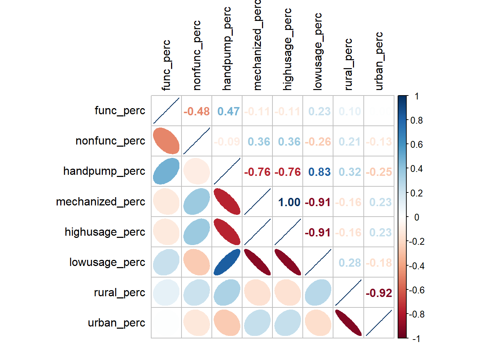
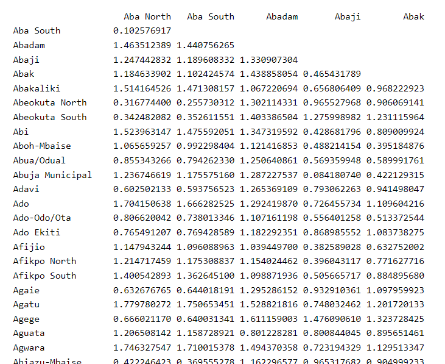
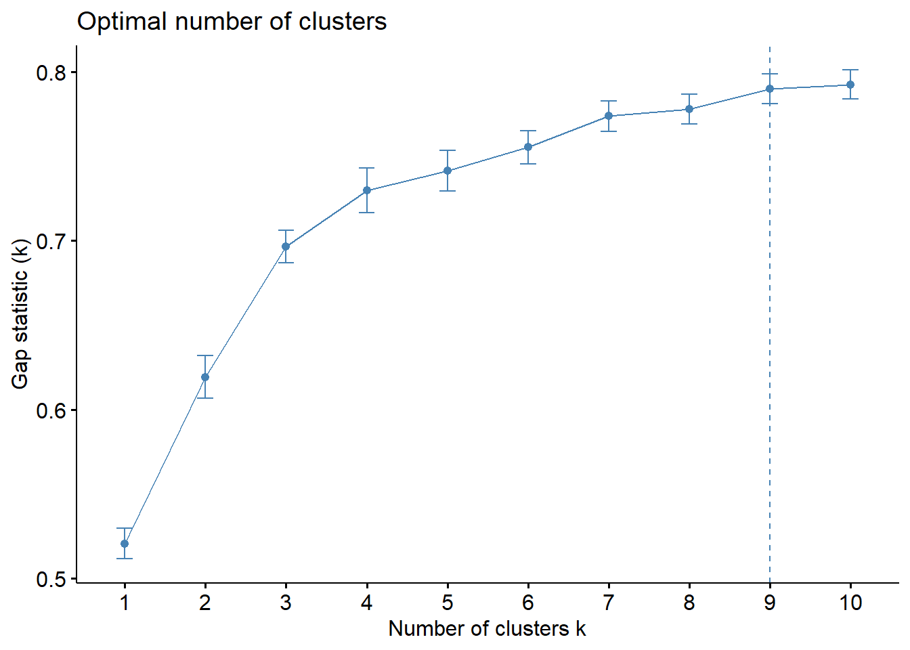
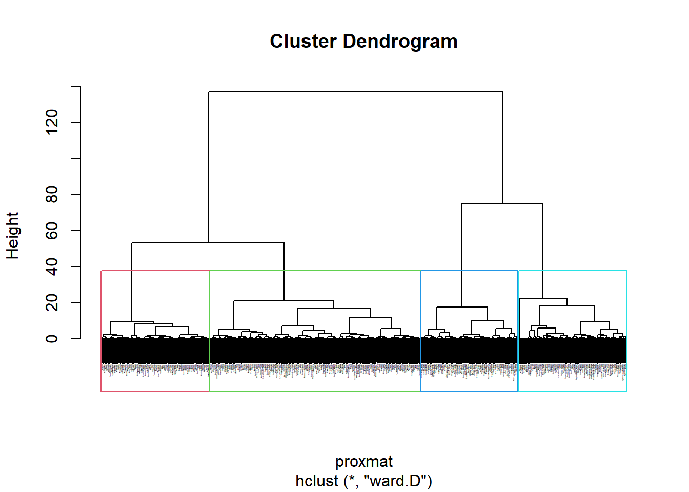
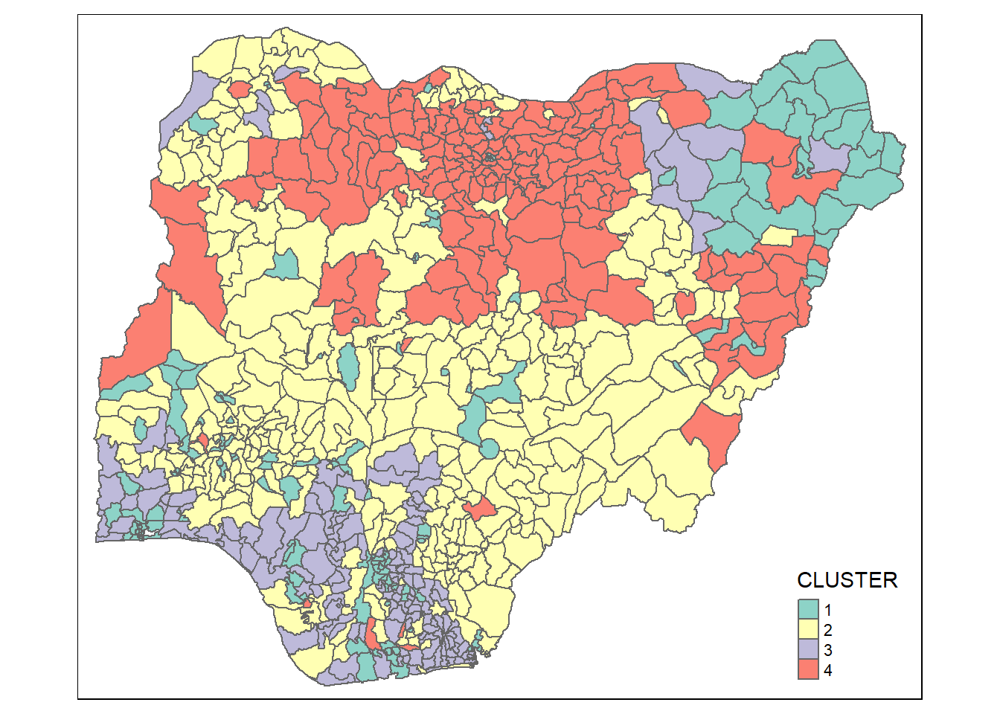

Take-home Exercise 2: Regionalisation of Multivariate Water Point Attributes with Non-spatially Constrained and Spatially Constrained Clustering Methods
The Task
The specific tasks of this take-home exercise are as follows:
Using appropriate sf method, import the shapefile into R and save it in a simple feature data frame format. Note that there are three Projected Coordinate Systems of Nigeria, they are: EPSG: 26391, 26392, and 26303. We can use any one of them.
Using appropriate tidyr and dplyr methods, derive the proportion of functional and non-functional water point at LGA level (i.e. ADM2).
Combining the geospatial and aspatial data frame into simple feature data frame.
Delineating water point measures functional regions by using conventional hierarchical clustering.
Delineating water point measures functional regions by using spatially constrained clustering algorithms.
Thematic Mapping
- Plot to show the water points measures derived by using appropriate statistical graphics and choropleth mapping technique.
Analytical Mapping
- Plot functional regions delineated by using both non-spatially constrained and spatially constrained clustering algorithms.
Overview
The process of creating regions is called regionalisation. A regionalisation is a special kind of clustering where the objective is to group observations which are similar in their statistical attributes, but also in their spatial location.
In this take-home exercise, we are required to regionalise Nigeria by using, but not limited to the following measures:
Total number of functional water points
Total number of nonfunctional water points
Percentage of functional water points
Percentage of non-functional water points
Percentage of main water point technology (i.e. Hand Pump)
Percentage of usage capacity (i.e. < 1000, >=1000)
Percentage of rural water points
Installing & Loading R Packages
In the code chunk below, p_load() of pacman package is used to install and load the following R packages into R environment.
The Data
Aspatial data
For the purpose of this exercise, data from WPdx Global Data Repositories will be used. There are two versions of the data. They are: WPdx-Basic and WPdx+. We are required to use WPdx+ data set.
Geospatial data
Nigeria Level-2 Administrative Boundary (also known as Local Government Area) polygon features GIS data will be used in this exercise. The data can be downloaded either from The Humanitarian Data Exchange portal or geoBoundaries.
Importing water point data
First, we are going to import the water point data into R environment.
Thing to learn from the code chunk above:
The original file name is called
Water_Point_Data_Exchange_-_PlusWPdx.csv, it has been rename toWPdx.csvfor easy encoding.Instead of using read.csv() of Base R to import the csv file into R, read_csv() is readr package is used. This is because during the initial data exploration, we notice that there is at least one field name with space between the field name (ie. New Georeferenced Column).
The data file contains water point data of many countries. In this study, we are interested on water point in Nigeria. Hence, filter() of dplyr is used to extract out records belonging to Nigeria only.
Next, write_rds() of readr package is used to save the extracted data table (i.e. wp) into an output file in rds data format. The output file is called wpdx_nga.rds and it is saved in rawdata sub-folder, which will not be uploaded to Git.
Convert wkt data
After the data are imported into R environment, it is a good practice to review both the data structure and the data table if it is in tibble data frame format in R Studio.
# A tibble: 95,008 × 70
row_id `#source` #lat_…¹ #lon_…² #repo…³ #stat…⁴ #wate…⁵ #wate…⁶ #wate…⁷
<dbl> <chr> <dbl> <dbl> <chr> <chr> <chr> <chr> <chr>
1 429068 GRID3 7.98 5.12 08/29/… Unknown <NA> <NA> Tapsta…
2 222071 Federal Minis… 6.96 3.60 08/16/… Yes Boreho… Well Mechan…
3 160612 WaterAid 6.49 7.93 12/04/… Yes Boreho… Well Hand P…
4 160669 WaterAid 6.73 7.65 12/04/… Yes Boreho… Well <NA>
5 160642 WaterAid 6.78 7.66 12/04/… Yes Boreho… Well Hand P…
6 160628 WaterAid 6.96 7.78 12/04/… Yes Boreho… Well Hand P…
7 160632 WaterAid 7.02 7.84 12/04/… Yes Boreho… Well Hand P…
8 642747 Living Water … 7.33 8.98 10/03/… Yes Boreho… Well Mechan…
9 642456 Living Water … 7.17 9.11 10/03/… Yes Boreho… Well Hand P…
10 641347 Living Water … 7.20 9.22 03/28/… Yes Boreho… Well Hand P…
# … with 94,998 more rows, 61 more variables: `#water_tech_category` <chr>,
# `#facility_type` <chr>, `#clean_country_name` <chr>, `#clean_adm1` <chr>,
# `#clean_adm2` <chr>, `#clean_adm3` <chr>, `#clean_adm4` <chr>,
# `#install_year` <dbl>, `#installer` <chr>, `#rehab_year` <lgl>,
# `#rehabilitator` <lgl>, `#management_clean` <chr>, `#status_clean` <chr>,
# `#pay` <chr>, `#fecal_coliform_presence` <chr>,
# `#fecal_coliform_value` <dbl>, `#subjective_quality` <chr>, …Notice that the newly imported tibble data frame (i.e. wpdx_nga) contains a field called New Georeferenced Column which represent spatial data in a textual format. In fact, this kind of text file is popularly known as Well Known Text in short wkt.
Two steps will be used to convert an asptial data file in wkt format into a sf data frame by using sf.
First, st_as_sfc() of sf package is used to derive a new field called Geometry as shown in the code chunk below.
If we check the wpdx_nga data frame and scroll to the last field now, we will see a new field called Geometry has been added.
Next, st_sf() will be used to convert the tibble data frame into sf data frame.
The code chunk below reveals the complete information of a feature object by using head() of Base R.
Simple feature collection with 5 features and 70 fields
Geometry type: POINT
Dimension: XY
Bounding box: xmin: 3.597668 ymin: 6.48694 xmax: 7.92972 ymax: 7.98
Geodetic CRS: WGS 84
# A tibble: 5 × 71
row_id #sour…¹ #lat_…² #lon_…³ #repo…⁴ #stat…⁵ #wate…⁶ #wate…⁷ #wate…⁸ #wate…⁹
<dbl> <chr> <dbl> <dbl> <chr> <chr> <chr> <chr> <chr> <chr>
1 429068 GRID3 7.98 5.12 08/29/… Unknown <NA> <NA> Tapsta… Tapsta…
2 222071 Federa… 6.96 3.60 08/16/… Yes Boreho… Well Mechan… Mechan…
3 160612 WaterA… 6.49 7.93 12/04/… Yes Boreho… Well Hand P… Hand P…
4 160669 WaterA… 6.73 7.65 12/04/… Yes Boreho… Well <NA> <NA>
5 160642 WaterA… 6.78 7.66 12/04/… Yes Boreho… Well Hand P… Hand P…
# … with 61 more variables: `#facility_type` <chr>,
# `#clean_country_name` <chr>, `#clean_adm1` <chr>, `#clean_adm2` <chr>,
# `#clean_adm3` <chr>, `#clean_adm4` <chr>, `#install_year` <dbl>,
# `#installer` <chr>, `#rehab_year` <lgl>, `#rehabilitator` <lgl>,
# `#management_clean` <chr>, `#status_clean` <chr>, `#pay` <chr>,
# `#fecal_coliform_presence` <chr>, `#fecal_coliform_value` <dbl>,
# `#subjective_quality` <chr>, `#activity_id` <chr>, `#scheme_id` <chr>, …Importing Nigeria LGA level boundary data
For the purpose of this exercise, shapefile downloaded from geoBoundaries portal will be used.
Reading layer `geoBoundaries-NGA-ADM2' from data source
`C:\Jacobche\ISSS624\Take-home_Ex\data' using driver `ESRI Shapefile'
Simple feature collection with 774 features and 5 fields
Geometry type: MULTIPOLYGON
Dimension: XY
Bounding box: xmin: 2.668534 ymin: 4.273007 xmax: 14.67882 ymax: 13.89442
Geodetic CRS: WGS 84Correcting duplicated LGAs
The code chunk below (as used by Jordan) uses duplicated() of base R which has identified 12 LGAs (ie shapeName) having duplicates.
[1] "Bassa" "Bassa" "Ifelodun" "Ifelodun" "Irepodun" "Irepodun"
[7] "Nasarawa" "Nasarawa" "Obi" "Obi" "Surulere" "Surulere"After some research, the corrected index and shapeName should be as follows:
| Index | shapeName |
|---|---|
| 94 | Bassa Kogi |
| 95 | Bassa Plateau |
| 304 | Ifelodun Kwara |
| 305 | Ifelodun Osun |
| 355 | Irepodun Kwara |
| 356 | Irepodun Osun |
| 519 | Nasarawa Kano |
| 520 | Nasarawa |
| 546 | Obi Benue |
| 547 | Obi Nasarawa |
| 693 | Surulere Lagos |
| 694 | Surulere Oyo |
The code chunk below is used to correct the respective shapeName values.
The code chunk below uses length() of base R to validate that there are no more duplicates in LGAs.
[1] 0Point in Polygon Overlay
Although wpdx_sf sf data frame consists of a field called #clean_adm2 which by right should provide the LGA names of the water points located. However, it is always a good practice to be more causcious when dealing with data accuracy.
In this section, we are going to use a geoprocessing function (or commonly know as GIS analysis) called point-in-polygon overlay to transfer the attribute information in nga sf data frame into wpdx_sf data frame. The code chunk below uses st_join() of sf package to perform a join and a new field called shapeName is now added to wpdx_sf sf data frame.
Data Wrangling
Recoding NA values into string
In the code chunk below, replace_na() is used to recode all the NA values in #status_clean and #water_tech_category fields into Unknown.
Extracting useful data points
In the code chunk below, filter() of dplyr is used to select water points of various #status_clean.
In the code chunk below, we will check the proportions in #water-tech-category and then use filter() of dplyr to select only the water points of sizable proportions.

In the code chunk below, filter() of dplyr is used to select water points of usage_capacity >=1000 and those <1000.
In the code chunk below, filter() of dplyr is used to select water points of is_urban = False and those = True.
Performing Point-in-Polygon Count
The code chunk below performs two operations at one go. Firstly, identify water points located inside each LGA by using st_intersects(). Next, length() of Base R is used to calculate numbers of water points that fall inside each LGA.
The code chunk below reveal the summary statistics of nga_wp data frame.
shapeName geometry total_wp func_wp
Length:774 MULTIPOLYGON :774 Min. : 0.0 Min. : 0.00
Class :character epsg:4326 : 0 1st Qu.: 45.0 1st Qu.: 17.00
Mode :character +proj=long...: 0 Median : 96.0 Median : 45.50
Mean :122.7 Mean : 67.36
3rd Qu.:168.8 3rd Qu.: 87.75
Max. :894.0 Max. :752.00
nonfunc_wp unknown_wp handpump_wp mechanized_wp
Min. : 0.00 Min. : 0.00 Min. : 0.00 Min. : 0.00
1st Qu.: 12.25 1st Qu.: 0.00 1st Qu.: 6.00 1st Qu.: 11.00
Median : 34.00 Median : 0.00 Median : 47.00 Median : 25.50
Mean : 41.60 Mean : 13.76 Mean : 75.89 Mean : 33.12
3rd Qu.: 60.75 3rd Qu.: 17.75 3rd Qu.:111.00 3rd Qu.: 46.00
Max. :278.00 Max. :219.00 Max. :764.00 Max. :245.00
highusage_wp lowusage_wp rural_wp urban_wp
Min. : 0.00 Min. : 0.00 Min. : 0.00 Min. : 0.00
1st Qu.: 11.00 1st Qu.: 16.00 1st Qu.: 23.00 1st Qu.: 0.00
Median : 25.50 Median : 60.00 Median : 64.00 Median : 9.00
Mean : 33.12 Mean : 89.59 Mean : 97.45 Mean : 25.27
3rd Qu.: 46.00 3rd Qu.:127.75 3rd Qu.:141.00 3rd Qu.: 33.00
Max. :245.00 Max. :767.00 Max. :894.00 Max. :324.00 Derive new variables using dplyr package
The unit of measurement of the values are number of water points. Using these values directly will be biased towards the underlying total number of water points. In order to overcome this problem, we will derive the percentages of each variable by using the code chunk below.
We notice there are some NA values in the nga_wp_derived data frame. As such, is.na() of base R is used to replace NA with 0.
Let us review the summary statistics of the newly derived variables using the code chunk below.
shapeName func_wp nonfunc_wp func_perc
Length:774 Min. : 0.00 Min. : 0.00 Min. :0.0000
Class :character 1st Qu.: 17.00 1st Qu.: 12.25 1st Qu.:0.3261
Mode :character Median : 45.50 Median : 34.00 Median :0.4741
Mean : 67.36 Mean : 41.60 Mean :0.4984
3rd Qu.: 87.75 3rd Qu.: 60.75 3rd Qu.:0.6699
Max. :752.00 Max. :278.00 Max. :1.0000
nonfunc_perc handpump_perc mechanized_perc highusage_perc
Min. :0.0000 Min. :0.0000 Min. :0.0000 Min. :0.0000
1st Qu.:0.2105 1st Qu.:0.1670 1st Qu.:0.1220 1st Qu.:0.1220
Median :0.3505 Median :0.5099 Median :0.3127 Median :0.3127
Mean :0.3592 Mean :0.4873 Mean :0.3754 Mean :0.3754
3rd Qu.:0.5076 3rd Qu.:0.7778 3rd Qu.:0.5771 3rd Qu.:0.5771
Max. :1.0000 Max. :1.0000 Max. :1.0000 Max. :1.0000
lowusage_perc rural_perc urban_perc geometry
Min. :0.0000 Min. :0.0000 Min. :0.0000 MULTIPOLYGON :774
1st Qu.:0.3968 1st Qu.:0.5727 1st Qu.:0.0000 epsg:4326 : 0
Median :0.6703 Median :0.8645 Median :0.1195 +proj=long...: 0
Mean :0.6078 Mean :0.7271 Mean :0.2561
3rd Qu.:0.8735 3rd Qu.:1.0000 3rd Qu.:0.3844
Max. :1.0000 Max. :1.0000 Max. :1.0000 Exploratory Data Analysis (EDA)
EDA using statistical graphics
The code below uses ggarange() function of ggpubr package to compute multiple histograms so as to reveal the distribution of the selected variables in the nga_wp_derived data frame.

From the above, we can observe that func_perc and nonfunc_perc are more normally distributed compared to other variables.
EDA using choropleth map
To have a quick look at the distribution of functional water points percentage of Nigeria at LGA level, a choropleth map will be prepared.
The code chunk below is used to prepare the choropleth by using the qtm() function of tmap package.

In order to reveal the distribution shown in the choropleth map above are biased towards the underlying number of functional water points at the LGAs, we will create two choropleth maps, one for the number of fucntional water points(i.e. func.map) and one for the percentage of functional water points (func_perc.map) by using the code chunk below.

Notice that there are areas with high proportions of functional water points but the actual number of functional water points are low.

The same observation also holds for non-functional water points aspect where there are high areas with high proportions of non-functional water points but the actual number of non-functional water points are low.
Correlation Analysis
Before we perform cluster analysis, it is important for us to ensure that the cluster variables are not highly correlated. The code below uses corrplot.mixed() function of corrplot package to visualise and analyse the correlation of the input variables.

The correlation plot above shows that mechanised_perc and highusage_perc are highly correlated, and similar high correlation is also spotted in handpump_perc and lowusage_perc. This suggests that only one of them in each pair should be used in the cluster analysis instead of both.
Hierarchy Cluster Analysis
In this section, we will perform hierarchical cluster analysis.
Extracting clustering variables
The code chunk below will be used to extract the clustering variables from nga_wp_derived_new.
shapeName func_perc nonfunc_perc handpump_perc mechanized_perc
1 Aba North 0.4117647 0.5294118 0.11764706 0.8235294
2 Aba South 0.4084507 0.4929577 0.09859155 0.8732394
3 Abadam 0.0000000 0.0000000 0.00000000 0.0000000
4 Abaji 0.4035088 0.5964912 0.40350877 0.5964912
5 Abak 0.4791667 0.5208333 0.08333333 0.9166667
6 Abakaliki 0.3519313 0.1802575 0.43776824 0.0944206
7 Abeokuta North 0.4705882 0.4411765 0.14705882 0.7647059
8 Abeokuta South 0.6050420 0.2773109 0.16806723 0.7058824
9 Abi 0.5197368 0.4078947 0.59868421 0.3289474
10 Aboh-Mbaise 0.2727273 0.3939394 0.01515152 0.6515152
rural_perc urban_perc
1 0.00000000 1.00000000
2 0.05633803 0.94366197
3 0.00000000 0.00000000
4 0.84210526 0.15789474
5 0.83333333 0.16666667
6 0.87553648 0.12446352
7 0.20588235 0.79411765
8 0.00000000 1.00000000
9 0.95394737 0.04605263
10 0.72727273 0.27272727Notice that the final clustering variables list does not include variable highusage_perc and lowusage_percbecause they are highly correlated with variable mechanised_perc and handpump_perc respectively.
Next, we need to change the rows by LGA name instead of row number by using the code chunk below.
shapeName func_perc nonfunc_perc handpump_perc
Aba North Aba North 0.4117647 0.5294118 0.11764706
Aba South Aba South 0.4084507 0.4929577 0.09859155
Abadam Abadam 0.0000000 0.0000000 0.00000000
Abaji Abaji 0.4035088 0.5964912 0.40350877
Abak Abak 0.4791667 0.5208333 0.08333333
Abakaliki Abakaliki 0.3519313 0.1802575 0.43776824
Abeokuta North Abeokuta North 0.4705882 0.4411765 0.14705882
Abeokuta South Abeokuta South 0.6050420 0.2773109 0.16806723
Abi Abi 0.5197368 0.4078947 0.59868421
Aboh-Mbaise Aboh-Mbaise 0.2727273 0.3939394 0.01515152
mechanized_perc rural_perc urban_perc
Aba North 0.8235294 0.00000000 1.00000000
Aba South 0.8732394 0.05633803 0.94366197
Abadam 0.0000000 0.00000000 0.00000000
Abaji 0.5964912 0.84210526 0.15789474
Abak 0.9166667 0.83333333 0.16666667
Abakaliki 0.0944206 0.87553648 0.12446352
Abeokuta North 0.7647059 0.20588235 0.79411765
Abeokuta South 0.7058824 0.00000000 1.00000000
Abi 0.3289474 0.95394737 0.04605263
Aboh-Mbaise 0.6515152 0.72727273 0.27272727Notice that the row number has been replaced into the LGA name.
Now, we will delete the shapeName field by using the code chunk below.
func_perc nonfunc_perc handpump_perc mechanized_perc rural_perc
Aba North 0.4117647 0.5294118 0.11764706 0.8235294 0.00000000
Aba South 0.4084507 0.4929577 0.09859155 0.8732394 0.05633803
Abadam 0.0000000 0.0000000 0.00000000 0.0000000 0.00000000
Abaji 0.4035088 0.5964912 0.40350877 0.5964912 0.84210526
Abak 0.4791667 0.5208333 0.08333333 0.9166667 0.83333333
Abakaliki 0.3519313 0.1802575 0.43776824 0.0944206 0.87553648
Abeokuta North 0.4705882 0.4411765 0.14705882 0.7647059 0.20588235
Abeokuta South 0.6050420 0.2773109 0.16806723 0.7058824 0.00000000
Abi 0.5197368 0.4078947 0.59868421 0.3289474 0.95394737
Aboh-Mbaise 0.2727273 0.3939394 0.01515152 0.6515152 0.72727273
urban_perc
Aba North 1.00000000
Aba South 0.94366197
Abadam 0.00000000
Abaji 0.15789474
Abak 0.16666667
Abakaliki 0.12446352
Abeokuta North 0.79411765
Abeokuta South 1.00000000
Abi 0.04605263
Aboh-Mbaise 0.27272727Data Standardisation
In order to avoid the cluster analysis result being biased towards clustering variables with large values, it is useful to standardise the input variables before performing cluster analysis.
The code chunk below will be used to standardisation the clustering variables by using Z-score method.
vars n mean sd median trimmed mad min max range skew
func_perc 1 774 0 1 -0.10 -0.02 1.04 -2.06 2.07 4.13 0.14
nonfunc_perc 2 774 0 1 -0.04 -0.03 1.05 -1.71 3.05 4.76 0.24
handpump_perc 3 774 0 1 0.07 0.00 1.37 -1.49 1.57 3.06 -0.09
mechanized_perc 4 774 0 1 -0.21 -0.09 1.05 -1.28 2.14 3.42 0.61
rural_perc 5 774 0 1 0.42 0.17 0.62 -2.23 0.84 3.06 -1.12
urban_perc 6 774 0 1 -0.44 -0.18 0.56 -0.82 2.37 3.19 1.19
kurtosis se
func_perc -0.62 0.04
nonfunc_perc -0.45 0.04
handpump_perc -1.33 0.04
mechanized_perc -0.78 0.04
rural_perc -0.09 0.04
urban_perc 0.16 0.04Notice the mean and standard deviation of the Z-score standardised clustering variables are 0 and 1 respectively. We need to bear in mind that Z-score standardisation method should only be used if we would assume all variables come from some normal distribution.
Computing proximity matrix
The code chunk below is used to compute the proximity matrix using euclidean method.
The code chunk below can then be used to list the content of proxmat for visual inspection.

Computing hierarchical clustering
The code chunk below uses hclust() of R stats to performs hierarchical cluster analysis via the ward.D method. The hierarchical clustering output is stored in an object of class hclust which describes the tree produced by the clustering process.
We can then plot the tree by using ggdendrogram() of ggdendro package as shown in the code chunk below. Plotly has also been used here to add interactivity to the dendrogram so that we are able to zoom in and out easily.
Selecting the optimal clustering algorithm
The code chunk below will be used to compute the agglomerative coefficients of all hierarchical clustering algorithms.
average single complete ward
0.9205714 0.8651966 0.9547781 0.9930765 With reference to the output above, we can see that Ward’s method provides the strongest clustering structure among the four methods assessed. Hence, in the subsequent analysis, only Ward’s method will be used.
Determining Optimal Clusters
We will use the Gap Statistic Method to determine the optimal clusters to retain. To compute the gap statistic, clusGap() of cluster package will be used.
Clustering Gap statistic ["clusGap"] from call:
clusGap(x = nga_wp_var, FUNcluster = hcut, K.max = 10, B = 50, nstart = 25)
B=50 simulated reference sets, k = 1..10; spaceH0="scaledPCA"
--> Number of clusters (method 'firstmax'): 10
logW E.logW gap SE.sim
[1,] 5.173680 5.694269 0.5205892 0.008957162
[2,] 4.945917 5.565201 0.6192844 0.012576939
[3,] 4.786584 5.483159 0.6965752 0.009618580
[4,] 4.685945 5.415759 0.7298148 0.013337222
[5,] 4.629941 5.371421 0.7414807 0.011868180
[6,] 4.578270 5.333581 0.7553111 0.009754079
[7,] 4.525729 5.299502 0.7737736 0.009165408
[8,] 4.492775 5.270735 0.7779597 0.008911302
[9,] 4.455358 5.245195 0.7898374 0.008767538
[10,] 4.429645 5.222057 0.7924118 0.008601505Next, we can visualise the plot by using fviz_gap_stat() of factoextra package.

From the output above, the optimal number of clusters is 4.
Interpreting the dendrograms
The code below uses rect.hclust() of R stats to add border colors for the rectangles.

Visually-driven hierarchical clustering analysis
We will perform visually-driven hierarchical clustering analysis by using heatmaply package. In the code chunk below, the heatmaply() of heatmaply package is used to build an interactive cluster heatmap.
Mapping the clusters formed
In order to visualise the clusters, the code chunk below uses qtm() of tmap package is used to plot the choropleth map showing the cluster formed.

The choropleth map above reveals the clusters are very fragmented. The is one of the major limitation when non-spatial clustering algorithm such as hierarchical cluster analysis method is used.